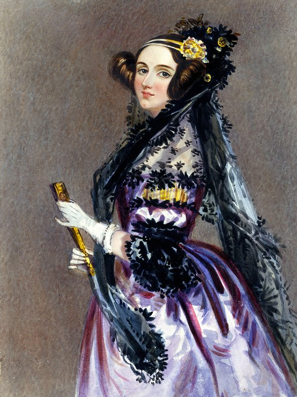

Не все знают, что первым в истории человечества программистом была, как ни странно, женщина. Ада Лавлейс – дочь известного английского поэта Джорджа Байрона и представительницы знатного рода Анны Изабеллы Милбенк, родившаяся в 1815 году, с детства увлекалась математикой. Этому всячески способствовала мать Ады Байрон (Лавлейс), которая была очень образованной и сама испытывала страсть к науке о цифрах. Правда, родители девочки развелись сразу же после ее рождения и Ада, будучи взрослой, не встречалась с отцом. Принадлежность к знатному роду и неординарные способности благоприятствовали тому, что в близком кругу общения 18-летней Ады было много известных людей того времени: Майкл Фарадей, Август де Морган, Чарльз Диккенс, Александр фон Гумбольдт. Судьбоносной и самой значимой в жизни талантливой девушки стала встреча с изобретателем вычислительных машин Чарльзом Бэббиджем. Профессора математики по праву считают изобретателем первого компьютера, ведь ему удалось придумать вычислительную машину, которая могла оперировать числами с точностью до 20 знаков. Бэббидж был поражен глубиной познаний юной Ады, вел с ней постоянную переписку и даже приглашал к сотрудничеству. Влияние профессора помогло юной талантливой девушке укрепиться в желании посвятить свою жизнь изучению математической науки. Раннее замужество и рождение троих детей не помешали Аде Байрон, в замужестве Лавлейс, продолжать заниматься научными изысканиями. Более того, супруг, наоборот, поддерживал ее страсть к математике, положительно отзываясь о работе жены и давая советы. Именно Уильям Кинг (граф Лавлейс) помог Аде распространить самую значимую работу, которая и позволила считать эту женщину первым в мире программистом. Этот единственный труд был создан на основе лекции профессора Бэббиджа. Ада Лавлейс перевела ее с французского на английский язык и снабдила перевод комментариями, в три раза превышавшими по объему запись выступления знаменитого изобретателя аналитической машины. Больше года ушло у Ады на создание разъяснений к лекции профессора. В своих комментариях исследовательница описывала широкий потенциал вычислительной техники и влияние ее возможностей на развитие человечества. Причем, самой аналитической машины на тот момент еще не существовало, ведь Бэббиджу так и не удалось изыскать финансирование для ее постройки. Ада Лавлейс была знакома лишь с идеей профессора, на основе которой она смогла описать алгоритм вычисления чисел Бернулли — первой программы, специально созданной для воспроизведения на компьютере. При этом исследовательница впервые в истории математики оперировала фундаментальными понятиями программирования: «цикл», «ячейка», «распределяющая карта» и прочими терминами. На 52 страницах своего труда первая женщина-программист отображает особенности работы аналитической машины и дает наглядные примеры возможностей ее применения на практике. Помимо всего прочего, Ада была уверена, что машина сможет не только производить вычисления, но и создавать любые музыкальные произведения или сложные модели, такие как нервная система человека. Молодая исследовательница не успела подробно описать и уж тем более реализовать все свои передовые идеи, так как в возрасте 36 лет она ушла из жизни, повторяя судьбу своего знаменитого отца. В честь первой женщины программиста Ады Лавлейс (Байрон) был назван один из первых языков программирования – Ada.